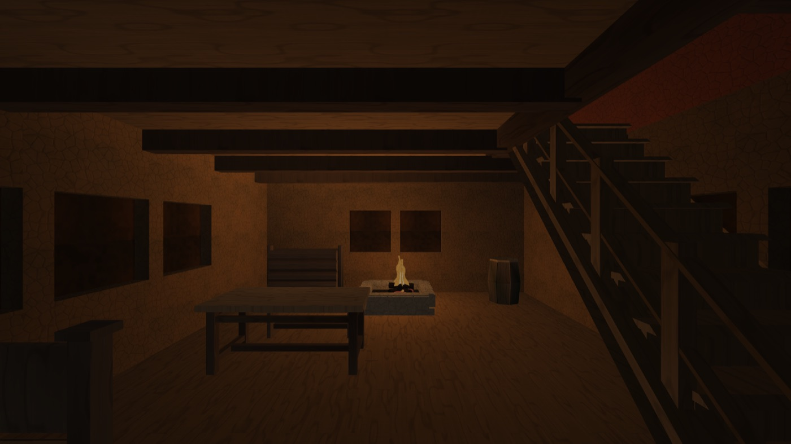
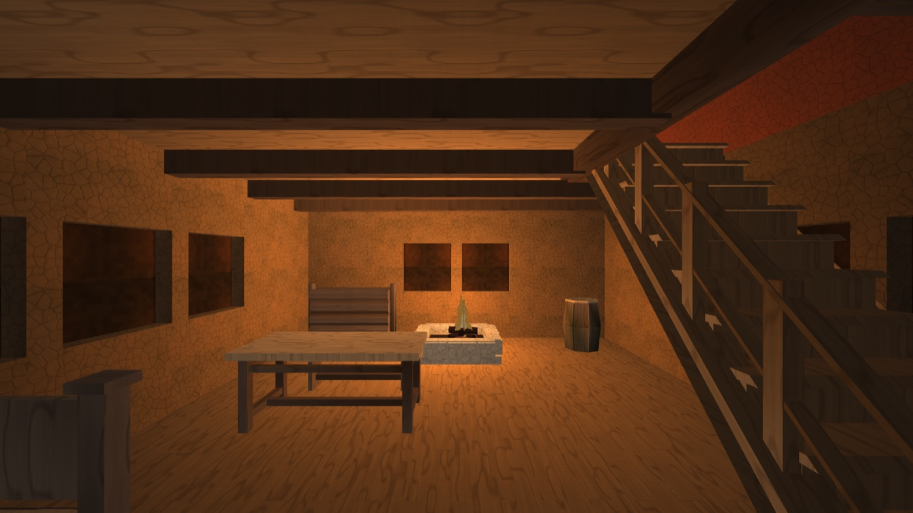
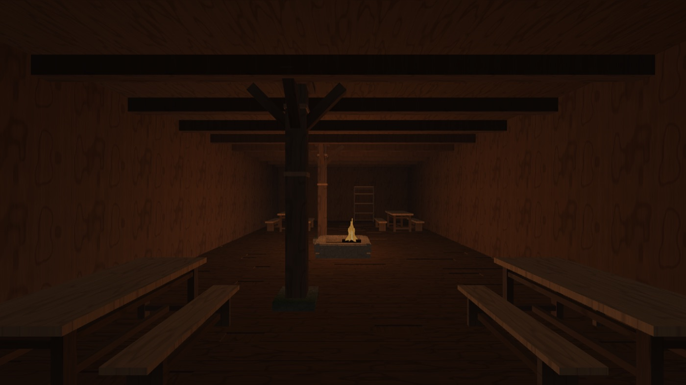
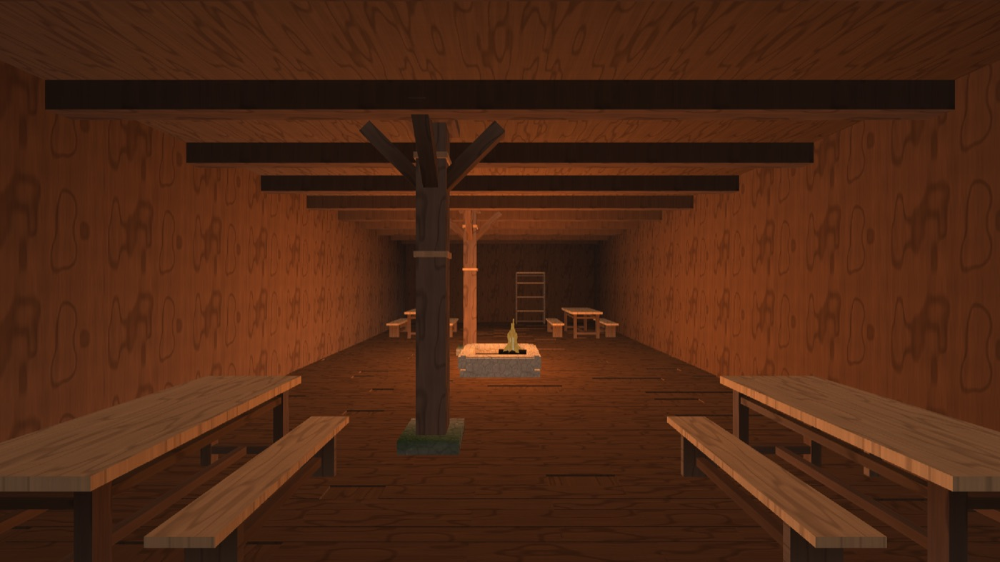
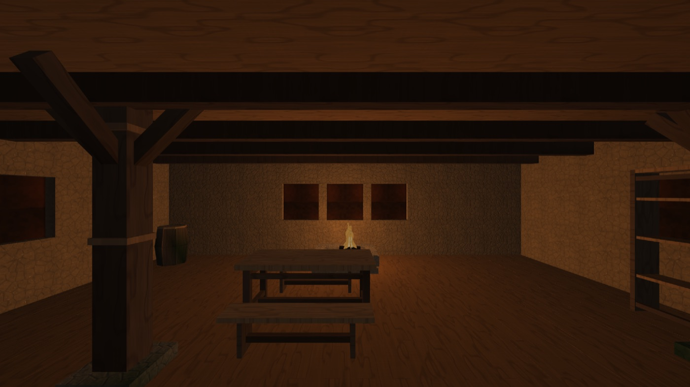
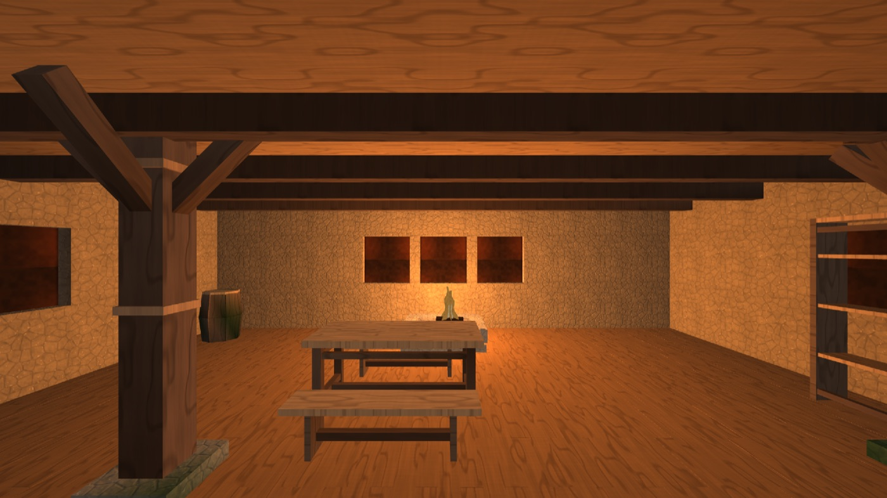
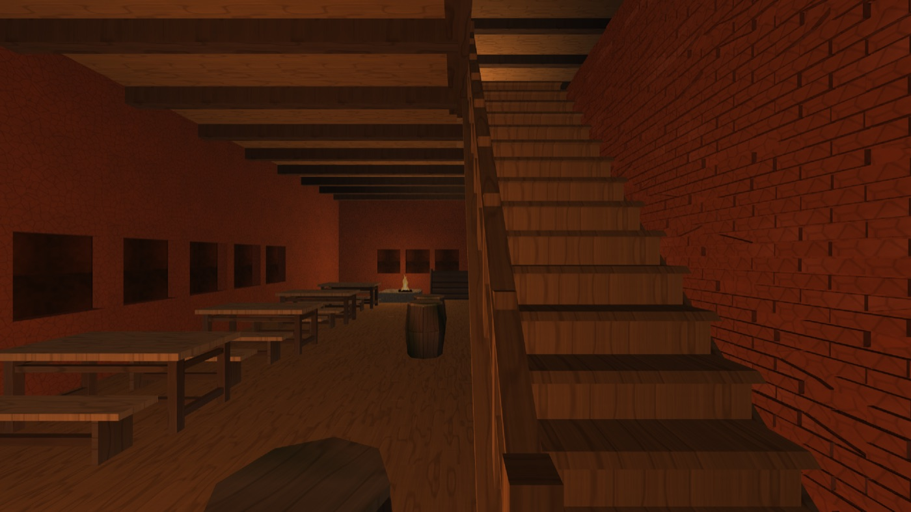
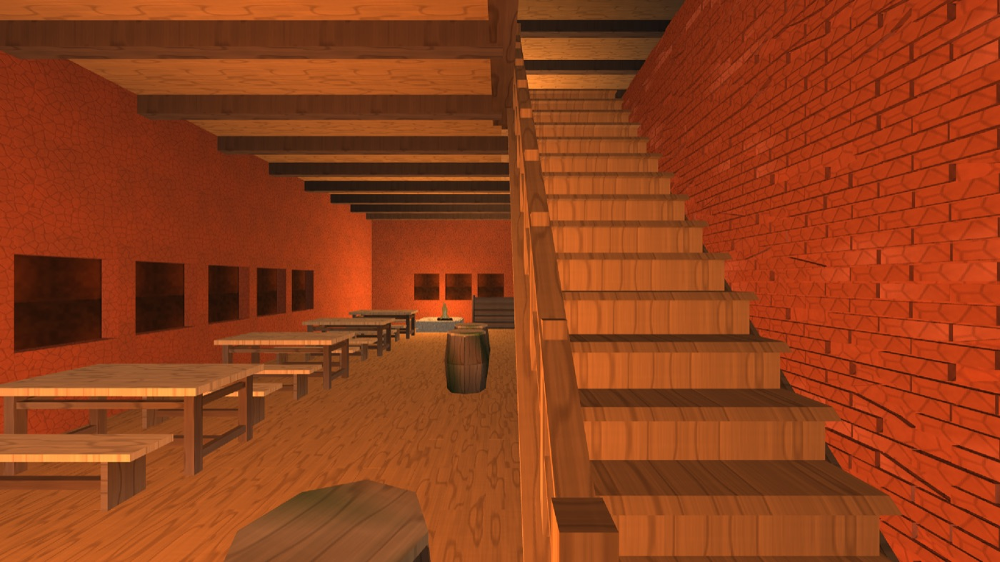
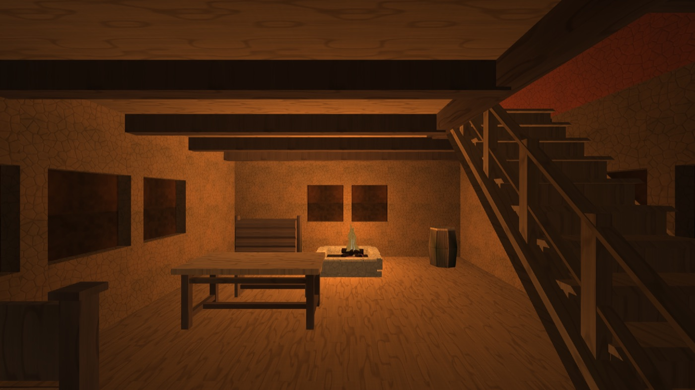

В домах было темно — и это было число, а не впечатление
Волна света интерьеров по криту владельца 28.08: «здорово стало,
но в домах слишком темно, надо что-то со светом сделать; посмотри ещё раз
скрины из внутреннего убранства Скайрима». Собрано build_ilight
(Ninja, RelWithDebInfo, clang из Homebrew); build_lead не
трогался. Обе руки каждого сравнения — из одного бинарника, через дозу
DFN_INTERIOR_LIGHT.
1. Референс — не «скрины из интернета», а его собственная папка
Слово «ещё раз» в крите — указание на то, что уже лежит в дереве:
images_examples/houses_indoors, девятнадцать скриншотов интерьеров
Skyrim, которые владелец собрал сам. Они и стали референсом. Дополнительно
поднята документация Creation Kit и разбор мод-сообщества (ELFX, Relighting
Skyrim, Luminosity) — оттуда взяты не числа, а устройство.
Что говорит устройство (цитаты, а не пересказ)
| Утверждение | Источник |
|---|---|
Затухание точечного света в Skyrim: atten = 1 − (d/r)², жёсткий ноль на радиусе. Само сообщество называет его «crude falloff… very bright in the center with harsh edges» | Community Shaders, InverseSquareLighting.hlsli; страница мода Inverse Square Lighting |
Ambient интерьера — не константа, а шестиосевой куб: max(0, mul(DirectionalAmbient, float4(normal,1))). У ambient есть направление | Community Shaders, package/Shaders/Lighting.hlsl |
| «Setting the RGB values to 0,0,0 may cause the lighting to turn completely off… should be avoided» — чёрный ambient в интерьере запрещён прямо | CK wiki, Lighting_Template |
| Directional light ячейки существует, «to simulate bounced light» | там же |
| «Light bounces off the environment to fill space, so don't expect pitch black dungeons.» | Luminosity (мод), страница описания |
| ELFX: «All light sources emit light, even the windows in interiors»; ELFX-Enhancer добавляет «darkened interiors… slight increased contrast» | Enhanced Lights and FX |
| Ванильный порок — не уровень, а расстановка: «light emitting from the center of two sources, light produced without a source» | Relighting Skyrim |
| Радиус носимого факела 512 юнитов = 7.31 м, Fade 1.35; типичный Fade источника «around 1.00 to 2.50» | гайд Steam по факелам; CK wiki, Light |
| Ambient интерьера 15 (из 255) — «as dark as you can go without requiring a torch»; 25 — «dark but playable»; 5 — «not pitch black, but it might as well be» | Skyrim Lighting Tweaks, журнал версий |
Одно предупреждение, чтобы им не воспользовались как числом: поле «Ambient» в шаблоне освещения ячейки — обманка. CK wiki: «This value is only used by the 'Set From Ambient' button for the Directional Ambient. It has no impact on the actual lighting.» Тот, кто возьмёт «ambient Skyrim» из этого поля, возьмёт число, которое движок не читает.
Числа референса — промерены прибором, а не выписаны
Девятнадцать кадров владельца прогнаны через
tools/measure_interior_light.py. Шкала —
перцептивная, и это не украшение: наш кадр уходит на экран
без гамма-кодирования (ни одного BGFX_TEXTURE_SRGB в
бэкенде — grep даёт ноль), а монитор читает его как sRGB. Значит свет,
доходящий до глаза, — это sRGB-декод байта; сравнивать сырые байты со
сжатыми в sRGB скриншотами Skyrim значит завысить себя втрое.
| Величина (свет в глаз, линейно) | мин | медиана | макс |
|---|---|---|---|
| медиана кадра — «сколько света в комнате вообще» | 0.0109 | 0.0277 | 0.0583 |
| p05 — «тёмный угол» | 0.0001 | 0.0034 | 0.0129 |
| контраст p95/p05 | 21 | 106 | 3499 |
Читается это так: комната в Skyrim в целом ТЁМНАЯ (медиана 0.028 — это примерно 3 % от белого), угол там ещё темнее нашего (0.0034), и всё держится на огромном контрасте: очаг и окно уходят в пересвет, а от них комната и читается. Ни один из девятнадцати кадров не садится в настоящий чёрный — минимальная p05 равна 0.0001, но не нулю.


2. Почему было темно: одна строка арифметики
Причина оказалась не «мало ламп» и не «слабый огонь». Локация писала
ambient = 0.10, а dfn_surface_light умножает ambient
на запечённую небесную видимость вершины. У запечатанной комнаты она
сидит РОВНО НА ПОЛУ FLOOR = 0.30
(engine/world/sources/HouseMesh.cpp), и сидит по построению:
все шестнадцать лучей запекания идут в верхнюю полусферу и упираются в
собственную кровлю.
общий свет комнаты = 0.10 · 0.30 = 0.03 от альбедо
штукатурка (альбедо ~0.5) → 0.015 → 4 люма из 255
Четыре люма при шаге 64-цветной палитры в 20 люма — это не «тускло», это ненарисовано. Всё, что было видно на кадре, рисовал один очаг. Отсюда и измеренные 41 % площади кадра ниже порога видимости.
Отсюда же и ответ на «почему не поднять яркость ламп». Лампа добавляет свет ТАМ, ГДЕ ОНА СТОИТ, и любое её усиление сначала выжигает пятно под собой. Угол — это ровно то место, куда ни одна лампа не достаёт.
3. Что сделано, числами
Всё — за дозой DFN_INTERIOR_LIGHT (0..1, умолчание 1),
строка 90 в таблице engine/app/sources/AppDoors.cpp. Правка живёт
в App::enter_interior: генераторы, паспорта городов и сами
локации не тронуты.
| Что | Было | Стало | Почему именно так |
|---|---|---|---|
| Общий свет комнаты, день | 0.10 нейтральный | 0.30 × (0.90, 0.94, 1.00) | Днём за стеной небо — тон уходит в холодное. Если поднимать тьму тем же оранжевым, каким горит огонь, комната станет ярче, а огонь перестанет читаться источником (см. кадр референса выше). |
| Общий свет комнаты, ночь | 0.10 нейтральный | 0.17 × (1.00, 0.82, 0.62) | Ночью светит уже не небо, а отражённый от стен собственный огонь дома: ниже и теплее. Переход по высоте солнца, полоса 0..0.20 (11.5° над горизонтом). |
| Очаг: радиус | ×1.00 | ×0.85 | Уменьшается, и это замер. Генератор даёт радиус ПО ЗАЛУ — 8.46 м в семиметровой комнате, 14.24 м в постоялом дворе, — а затухание у нас smoothstep по линейному окну: комната целиком сидит в пологой верхушке кривой и получает почти одно и то же число. «Огонь не греет» значило не «тускло», а «ровно». |
| Очаг: яркость | ×1.00 | ×2.35 | Подъём p95: у владельца 0.13..0.85, у нас до правки 0.014..0.038. |
| Очаг: мягкость | 0.25 | 0.40 | Большой открытый огонь огибает форму (wrap-диффуз). Выше не поднята нарочно: мягкость заодно кладёт затухание положе и работает ПРОТИВ градиента, ради которого сжат радиус — проба на 0.55 съела половину выигранного контраста. |
| Свеча/светец: радиус и яркость | ×1.00 | ×1.15 / ×1.25 | Точка, а не второй очаг. Подсвечник, спорящий яркостью с огнём зала, — ровно та ошибка, за которую ругают ванильный Skyrim. |
| Доза мерцания достаёт до комнаты | город — да, локация — нет | обе | Побочная починка: DFN_LIGHT_FLICKER обещала «ровный свет бит-в-бит», и обещание кончалось на пороге дома. Умолчание 1.0 умножает на единицу — прежний кадр по построению. |
Разбор огня по роли — по имени, а не по числам. Локация НАЗЫВАЕТ свои
огни: gen_city пишет [light].note — «очаг: …»,
«светец яруса: …». Запасная рука для рукописных локаций (стенда, пилота) — по
мягкости: это единственное поле, которого не касается экземплярная дрожь
генератора, и оно разделяет надёжно (открытый огонь 0.15..0.25, фитиль и стекло
0.45..0.65).
4. Четыре дома: до и после
Те же четыре дома, что в отчёте о лестницах, плюс два вайтрановских. Рецепт кадра целиком:
DFN_MENU=0 DFN_AUDIO=0 DFN_NULL_AUDIO=1 DFN_OPEN_MAP=cities/<город> \ DFN_INTERIOR=assets/scenes/int/<город>/<слаг>.scene \ DFN_INTERIOR_LIGHT=<0 либо 1> DFN_INTERIOR_FADE=0 DFN_TIME_OF_DAY=0.5 \ DFN_HUD=0 DFN_CROSSHAIR=0 DFN_SHOT_AFTER=90 DFN_CAPTURE_DIR=<куда> \ ./build_ilight/engine/app/dfn_app
| Зал | медиана байта до → после | ниже порога 20 до → после | медиана, свет в глаз до → после | контраст p95/p05 до → после |
|---|---|---|---|---|
| Житнов x248z210, ветхий дом окраины | 22.7 → 49.7 | 41.5 % → 6.4 % | 0.0084 → 0.0315 | 9.7 → 18.2 |
| Житнов x246z170, постоялый двор | 36.0 → 78.9 | 6.3 % → 0.1 % | 0.0177 → 0.0780 | 5.2 → 7.8 |
| Вайтран x128z152, таверна | 31.0 → 74.4 | 25.6 % → 1.8 % | 0.0137 → 0.0692 | 15.6 → 24.2 |
| Вайтран x129z106, Йоррваскр | 19.7 → 43.9 | 53.5 % → 6.7 % | 0.0068 → 0.0251 | 5.9 → 11.0 |
| референс владельца, 19 кадров Skyrim | — | — | 0.0109 .. 0.0583 | 21 .. 3499 |
Главное чтение таблицы. До правки три зала из четырёх были темнее САМОГО ТЁМНОГО кадра владельца (0.0068, 0.0084, 0.0137 против его минимума 0.0109 — два строго ниже, третий вплотную). После правки все четыре лежат в его полосе. Это и есть смысл слова «темно», сказанный числом.




images_examples/houses_indoors/image copy 17.png
выше: тот же расклад — тёмные края, светлая середина.

fill, который был в модели всегда и при ambient 0.03
стоил доли люмы.

Замер по коробкам, а не по кадру целиком
Коробки поставлены ОДИН РАЗ, по геометрии, на контрольной руке, и обе руки читаются по ТЕМ ЖЕ пикселям (правило 47: прибор не имеет права искать свой предмет по величине, которую проверяет).
| Коробка (Житнов x248z210) | медиана байта до → после | ниже порога до → после | свет в глаз до → после |
|---|---|---|---|
| пол перед очагом | 44.7 → 109.9 | 0 % → 0 % | 0.0259 → 0.1556 |
| дальний угол слева внизу | 14.6 → 36.4 | 100 % → 0 % | 0.0046 → 0.0180 |
| потолочный настил | 28.6 → 62.3 | 0 % → 0 % | 0.0110 → 0.0509 |
Угол, у которого сто процентов пикселей лежало ниже порога различимости, теперь не имеет там ни одного. Контраст очаг/угол 5.6× → 8.6×.
5. День и ночь — наш ответ про окна
Полноценного света из проёма у нас быть не может, и это устройство, а не
лень: окна дома глухие (PartForgeWalls ставит в проём
вставку Pane), а запекание небесной видимости стреляет только
вверх и стену с окном от глухой стены не отличает вовсе. Что оказалось
доступно без нового прохода:
- Час суток. Днём общий свет выше и холоднее (в щели, ставни и вставки снаружи льётся дневное небо), ночью ниже и теплее, и очаг остаётся единственным хозяином кадра.
- Направление, которое в модели уже было и было невидимо.
fill = 1 + FILL_SUN · dot(n, азимут солнца)даёт стене, обращённой к солнцу, 1.30 против 0.70 у противоположной — 1.86 крат. При ambient 0.03 эта разница составляла 0.7 люмы, то есть не существовала; теперь она видна.
| Житнов x248z210, доза 1 | ambient | медиана байта | ниже порога | медиана, свет в глаз |
|---|---|---|---|---|
полдень (DFN_TIME_OF_DAY=0.5) | 0.324 0.338 0.360 | 49.7 | 6.4 % | 0.0315 |
полночь (DFN_TIME_OF_DAY=0.0) | 0.200 0.164 0.124 | 42.3 | 14.1 % | 0.0234 |

Одна починка по дороге, без которой ночная рука была ложной
Первая версия читала час суток из env.sun_direction.y и
получала 0.67 (полдень) при DFN_TIME_OF_DAY=0.0. Причина
названа в самой петле кадра: apply_sky_time не зовётся, пока мир
подвешен (у локации нет неба), а вход по двери DFN_INTERIOR
случается ДО ПЕРВОГО КАДРА — окружение держало ещё умолчание структуры. Ночная
рука была неотличима от дневной и показывала бы «день/ночь работает» на двух
одинаковых кадрах. Считается теперь ровно то же, что считает петля: доля суток
из game_seconds_ и та же функция
render::sun_direction_at (правило 35 — один хозяин у геометрии
солнца).
6. Отрицательное плечо: доза 0 — прежний кадр
Утверждение проверено двумя способами, и оба нужны.
По построению. При дозе 0 общий свет считается как
0.10f + (x − 0.10f)·0.0f — точный 0.10f для любого
конечного x, — а ветка поправки огней вся стоит под
if (ilight > 0.0f).
Прогоном. Собран бинарник HEAD (моих трёх файлов нет вовсе), сняты те же кадры, сравнены с дозой 0 финальной сборки:
| Сравнение | Δ медианы | Δ p10 |
|---|---|---|
| HEAD против дозы 0 — Житнов x248z210 | −0.07 | 0.00 |
| HEAD против дозы 0 — Йоррваскр | +0.07 | 0.00 |
| шум прибора: две руки ОДНОГО бинарника, одна доза | ±0.06 | 0.00 |
И честная оговорка, которая дороже самой таблицы. Побитового
сравнения кадров здесь предъявить нельзя, и вот почему: кадр интерьера сам
по себе не воспроизводим. Две руки одного бинарника с одними дверями дают
2.67 млн различающихся байт при максимуме 69. Причина найдена и она не в
мерцании (с DFN_LIGHT_FLICKER=0 расхождение остаётся): игрок
всё ещё оседает на пол после телепорта, и на девяностом кадре его
pos_y отличается между прогонами на 1.3 мм — сайдкары двух
снимков расходятся ровно в этой строке. Полтора миллиметра камеры сдвигают
каждый пиксель. Поэтому здесь сказано не «бит-в-бит», а «разница равна
собственному шуму прибора», и это единственное, что кадром доказуемо.
7. Что НЕ сделано, и это не оговорка задним числом
1. Контраст не дотянут, и он дотягивается не ambient'ом. У владельца
контраст p95/p05 медианно 106×, у нас после правки 7..24×. Разрыв —
это пересвет, которого у нашей шкалы нет вовсе: у него в кадре горит
само пламя и светится оконная вставка, у нас самая яркая точка кадра — это
пол под очагом. Лечится это не светом, а двумя вещами: свечением тела огня
(glow уже есть у furn-fire, но он рисуется альбедо
без пересвета) и светящейся вставкой окна.
2. Свет из окна как источник — не сделан. Разобрано почему:
вставка Pane глухая и строится ПОДЧАСТЬЮ стенного элемента, а
не своим элементом, — то есть у неё нет своего признака
emissive; запекание видимости стреляет только вверх и окна не
знает. Это две правки в чужих зонах (PartForgeWalls и
HouseMesh), и делать их наспех внутри волны света я не стал.
Это самая дорогая из оставшихся вещей и самая заметная — см. кадр
images_examples/houses_indoors/image copy 3.png, где окно и есть
весь свет комнаты.
3. Ambient у нас без направления. В Skyrim он шестиосевой куб
(DirectionalAmbient), у нас — одно число, которому форму придаёт
только fill и запечённое AO. Днём это заметно на потолке: он
ровнее, чем на референсе.
4. Йоррваскр остался у нижнего края полосы (0.0251 при минимуме владельца 0.0109 и медиане 0.0277). Это зал 30 м длиной с ОДНИМ очагом посередине: ему нужны не большие числа, а вторые огни — это работа генератора, а не дозы.
8. Проверки
| Что | Результат |
|---|---|
ctest --test-dir build_ilight -j8 | 109/109 прошли |
python3 tools/gen_city.py whiterun --check | сцена байт-в-байт, карта байт-в-байт, локации байт-в-байт; .relief расходится — не эта волна: генераторов и ассетов правка не касалась, у файла в дереве формат dh, а прогон пишет mat. Находка зоны рельефа. |
python3 tools/gen_city.py cornhall --check | то же самое: три предмета выпуска из четырёх байт-в-байт, .relief расходится тем же форматом. |
| Таблица дверей | 89 → 90, длина массива пересчитана grep -c '^ {"DFN_', а не прибавлена к запомненной. |
9. Что где лежит
| Файл | Что в нём |
|---|---|
engine/app/sources/AppInterior.cpp | блок «СВЕТ ИНТЕРЬЕРА»: разбор причины, все числа с выводом, flame_of(), применение дозы. |
engine/app/sources/AppDoors.cpp | строка DFN_INTERIOR_LIGHT. |
engine/app/sources/App.h | interior_light_dose(). |
tools/measure_interior_light.py | прибор: гистограмма кадра и коробок, перцептивная шкала, полоса референса. |
docs/reports/interior-light-28-08/ | десять кадров приёмки. |
images_examples/houses_indoors/ | референс владельца. В гит не кладётся (.gitignore). |